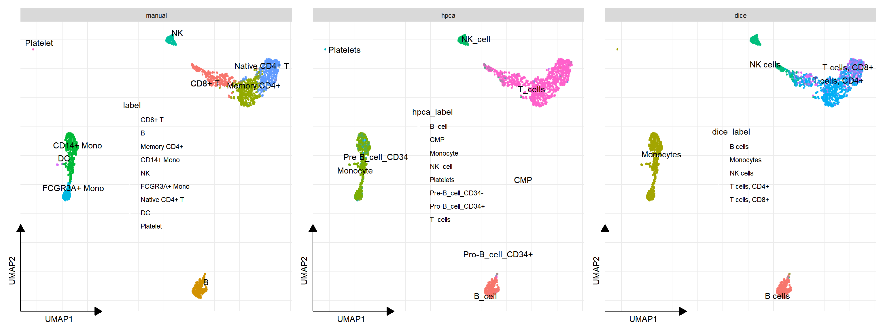

2 Cell type annotation
2.1 Manual annotation
Please refer to the Cell cluster annotation session.
2.2 Automatic annotation
2.2.1 Run SingleR
## class: SummarizedExperiment
## dim: 19363 713
## metadata(0):
## assays(1): logcounts
## rownames(19363): A1BG A1BG-AS1 ... ZZEF1 ZZZ3
## rowData names(0):
## colnames(713): GSM112490 GSM112491 ... GSM92233
## GSM92234
## colData names(3): label.main label.fine label.ont## DataFrame with 6 rows and 4 columns
## scores labels delta.next
## <matrix> <character> <numeric>
## 1 0.1040907:0.233575:0.222844:... T_cells 0.0888618
## 2 0.1017499:0.358524:0.299235:... B_cell 0.3046119
## 3 0.0696533:0.265561:0.237793:... T_cells 0.1985708
## 4 0.0863639:0.235842:0.275857:... Monocyte 0.0503585
## 5 0.0737555:0.164465:0.175442:... NK_cell 0.0892196
## 6 0.1281878:0.258801:0.249245:... T_cells 0.0775251
## pruned.labels
## <character>
## 1 T_cells
## 2 B_cell
## 3 T_cells
## 4 Monocyte
## 5 NK_cell
## 6 T_cellsdice <- celldex::DatabaseImmuneCellExpressionData()
res2 <- SingleR(test = assay(pbmc, "logcounts"), ref = dice, labels = dice$label.main)
head(res2)## DataFrame with 6 rows and 4 columns
## scores labels
## <matrix> <character>
## 1 0.01278759:0.0594162:0.1731098:... T cells, CD4+
## 2 0.26468267:0.1424061:0.0667195:... B cells
## 3 0.03184648:0.0768767:0.2039776:... T cells, CD4+
## 4 -0.00914745:0.3439882:0.0610696:... Monocytes
## 5 -0.04285154:0.0396558:0.2513840:... NK cells
## 6 0.06123675:0.0980547:0.1470082:... T cells, CD4+
## delta.next pruned.labels
## <numeric> <character>
## 1 0.00808206 T cells, CD4+
## 2 0.12227658 B cells
## 3 0.05825145 T cells, CD4+
## 4 0.28291862 Monocytes
## 5 0.15577995 NK cells
## 6 0.12673642 T cells, CD4+2.2.3 Comparision with manual annotation result
x <- colData(pbmc)[, c("label", "hpca_label", "dice_label")]
plot_list(
manual = sc_dim(pbmc, reduction="UMAP"),
hpca = sc_dim(pbmc, reduction="UMAP", mapping=aes(color=hpca_label)),
dice = sc_dim(pbmc, reduction="UMAP", mapping=aes(color=dice_label)),
ncol = 3) &
sc_dim_geom_label(geom = ggrepel::geom_text_repel) &
theme(legend.position='inside')
## hpca_label
## label B_cell CMP Monocyte NK_cell Platelets
## CD8+ T 0 0 0 32 0
## B 333 2 0 0 0
## Memory CD4+ 0 0 0 0 0
## CD14+ Mono 0 0 444 0 0
## NK 0 0 0 155 0
## FCGR3A+ Mono 0 0 152 0 0
## Native CD4+ T 0 2 0 2 0
## DC 0 0 19 0 0
## Platelet 0 0 0 0 12
## hpca_label
## label Pre-B_cell_CD34- Pro-B_cell_CD34+ T_cells
## CD8+ T 1 1 363
## B 3 4 7
## Memory CD4+ 2 0 529
## CD14+ Mono 48 0 0
## NK 1 0 1
## FCGR3A+ Mono 6 0 1
## Native CD4+ T 2 0 514
## DC 2 0 0
## Platelet 0 0 0## dice_label
## label B cells Monocytes NK cells T cells, CD4+
## CD8+ T 0 1 174 148
## B 340 4 1 3
## Memory CD4+ 0 0 0 495
## CD14+ Mono 0 492 0 0
## NK 0 0 157 0
## FCGR3A+ Mono 0 159 0 0
## Native CD4+ T 0 2 0 279
## DC 0 21 0 0
## Platelet 0 12 0 0
## dice_label
## label T cells, CD8+
## CD8+ T 74
## B 1
## Memory CD4+ 36
## CD14+ Mono 0
## NK 0
## FCGR3A+ Mono 0
## Native CD4+ T 239
## DC 0
## Platelet 0